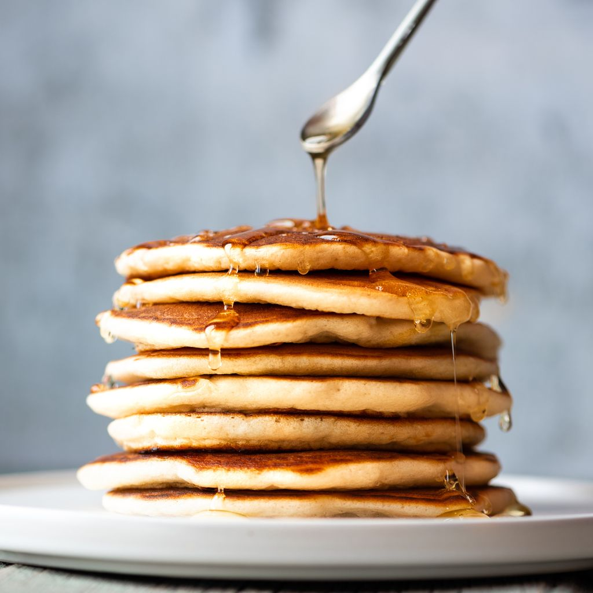

Pancakes
This pancakes will need
2 ½ cups all-purpose flour(310 g)
3 tablespoons sugar
2 teaspoons kosher salt
1 teaspoon baking powder
1 teaspoon baking soda
2 ½ cups buttermilk(600 mL)
8 tablespoons unsalted butter, 1 stick
2 eggs, whites and yolks seperated
1 tablespoon unsalted butter

How to make them
- In a large bowl, add the flour, sugar, salt, baking powder, and baking soda and whisk to combine.
- In a medium bowl or liquid measuring cup, add the buttermilk, melted butter, and egg yolks and whisk to
combine.
- Add the buttermilk mixture to the dry ingredients and gently fold with a rubber spatula until just
combined.
- Add the egg whites and fold until just combined. Be sure not to overmix. Some lumps are okay.
- Let the batter rest for 15-30 minutes at room temperature.
- Add the butter to a cast iron skillet and heat over medium low heat. Once the butter has melted and is
bubbling, reduce the heat to medium-low and add ⅓ cup (75 g) of batter to the pan.
- Cook for 2-3 minutes, until bubbles start to appear on the surface. If adding any toppings like
chocolate chips or blueberries, sprinkle over the pancake. Flip the pancake over and cook for another 1-2
minutes, until golden brown. Repeat with the remaining batter.
Bon Appétit!